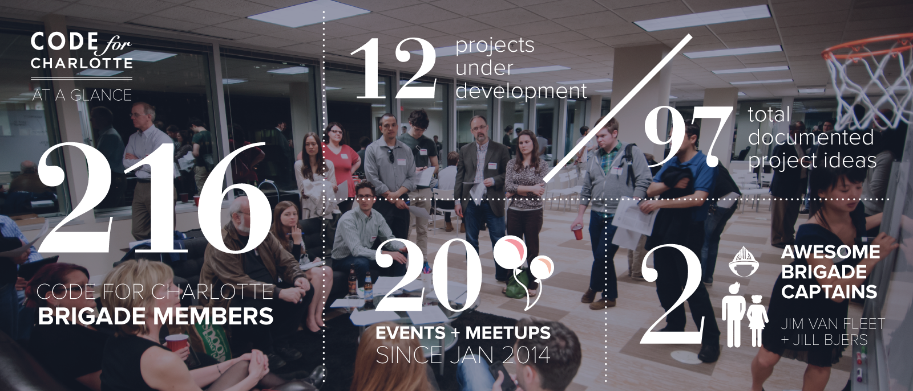

Community
Celebrating the Code for Charlotte Brigade
We’d like to take a moment here to highlight the Code for Charlotte Brigade. The Brigade began right around the same time we became fellows, and they have impressed us in how quickly they have grown and how excited members are to work on projects collaboratively with the City. Many members have been instrumental in helping us with research; others are excited to help with development and documentation of our project. We’re honored to be a part of their activities so far and will continue doing everything we can to support them.
Events
Here’s a snapshot of the events we’ve been involved in over the past six months:
Feb 10 / Tiffany spoke at Charlotte’s User Experience Meetup Group
Feb 15 / Tiffany spoke at World Information Architecture Day in Charlotte
Feb 19 / Andrew spoke at Charlotte Front-End Developers Meetup Group
Feb 20 / Code Across + Code for Charlotte Brigade Launch Party
Feb 21 / Team discusses Code for America at Skookum Digital Lunch
Feb 24 / Team presented at City Council Meeting about Code for America
Feb 27 / Team hosted a Lunch-and-Learn at the Federal Reserve for City and County
Apr 17 / Team hosted a Breakfast-and-Learn at Spirit Square for City and County
Apr 17 / Team hosted Charlotte’s First Civic Mixer at Packard Place
May 6 / Andrew presented with David Leonard at 311 Synergy Conference
Jun 5 / Tiffany at Personal Democracy Forum in New York
Jun 7 / Danny at Charlotte’s first civic hackathon as part of National Day of Civic Hacking
Jun 17 / Tiffany and Andrew presented at the City of Charlotte’s Technology Summit
Jun 17 / Tiffany and Andrew represented Code for America with the Code for Charlotte Brigade exhibit at UNCC Data Day
Jun 25 / Danny at Inland Empire Open Data Forum


Press
We were also excited to be featured in a few media outlets:
Charlotte Observer: ‘Peace Corps for geeks’ brings top tech minds to help Charlotte UNCC VenturePrise: Why is Code for America Abuzz for Charlotte’s Initiative?Digital Charlotte: Code for America Lands in Charlotte. Charlotte Observer: Hackathon boosts digitizing city data to next stepSkookum Digital Works Blog: SDW Hosts Charlotte Code for America Kickoff Event ProgrammableWeb: Code for America 2015 Fellowship Seeks Developers, Designers